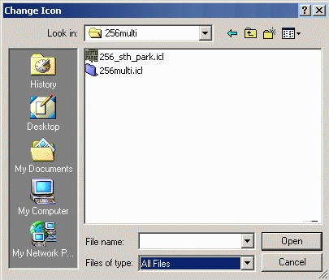

Changing Desktop Icons
Top
Drives
Folders
Files
Shortcuts
System
System Icons
- The system icons associated with My Computer,
Network Places/Neighborhood and the Recycle Bin
can be easily changed. These instructions should work for Windows
98, Windows ME, Windows NT, and Windows 2000. These instructions will not
work for Windows XP.
- Right click on your computer desktop and select the Properties
menu item. Click on the Effects tab.
- In this example, the icons for My Computer will be changed. The
other icons can be changed in a similar manner. Select the My Computer
icon by clicking the left mouse button on it. Click on the Change Icon
button.
- Clicking on the Change Icon button causes this window to be displayed.
Either type in the full pathname for the icon or icon library containing the
icon to be used, or click on the Browse button and navigate to the
directory containing the required icon.

Make sure you select All Files in the Files of type: dropbox.
Double-click on one of the icon files, for example 256multi.icl, and a
window showing all available icons will appear.
- Select the icon you want to use for My Computer and click the OK
button.
- The selected icon will now be associated with My Computer.
Click on the OK button or the Apply button for the change to
take affect. Here are the before and after images for the changes made in
this example.
- You can change the other system icons in the same way that the My Computer
icons was changed.
- Does your desktop show the My Computer icon with more than 16 colors? If
not, then you may need to set your computer to display
more than 16 colors.